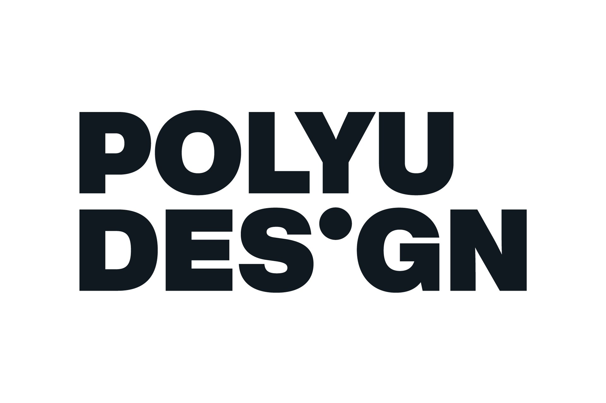
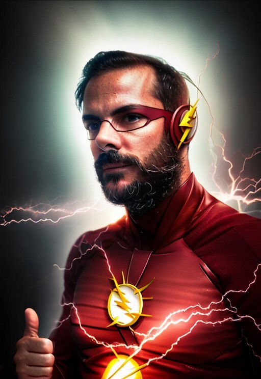
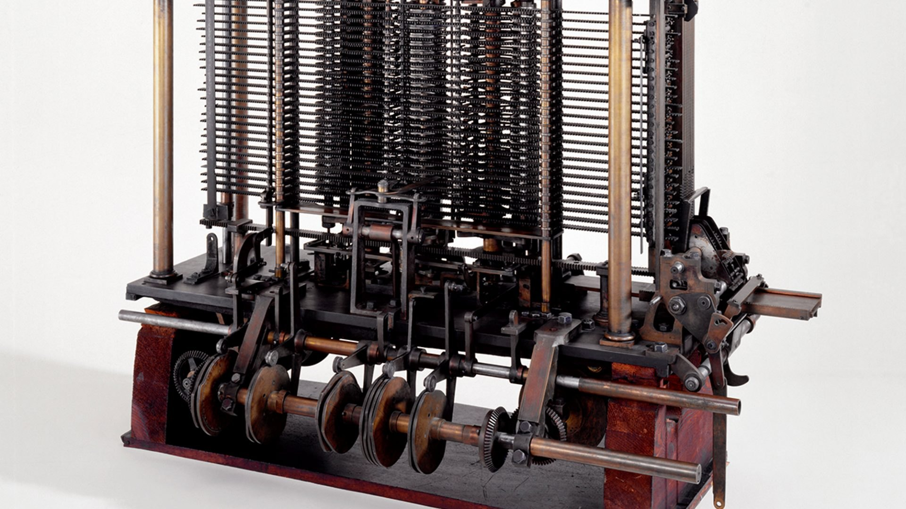
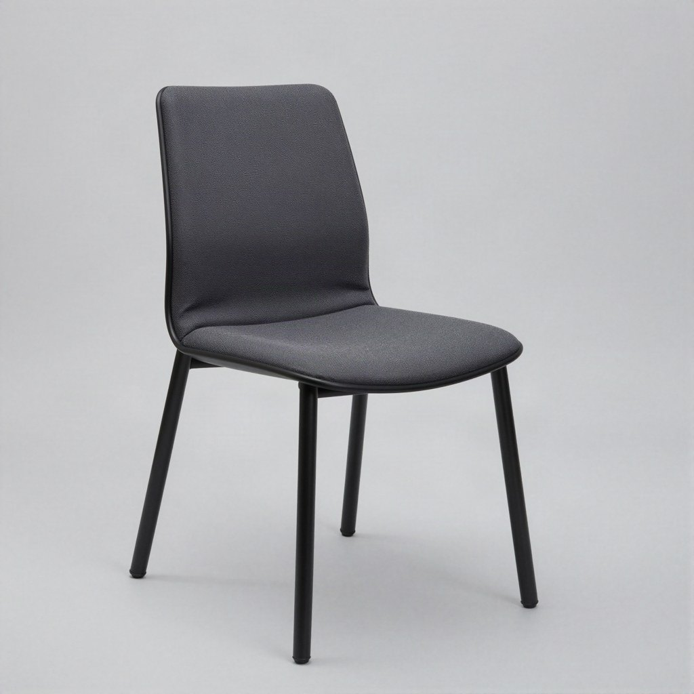
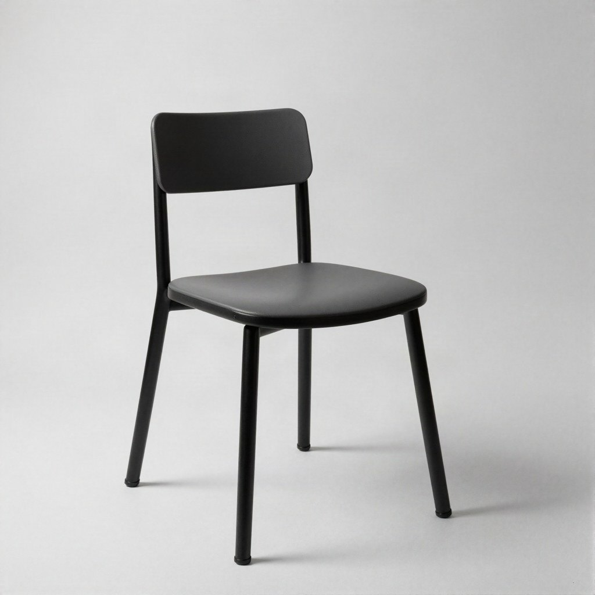
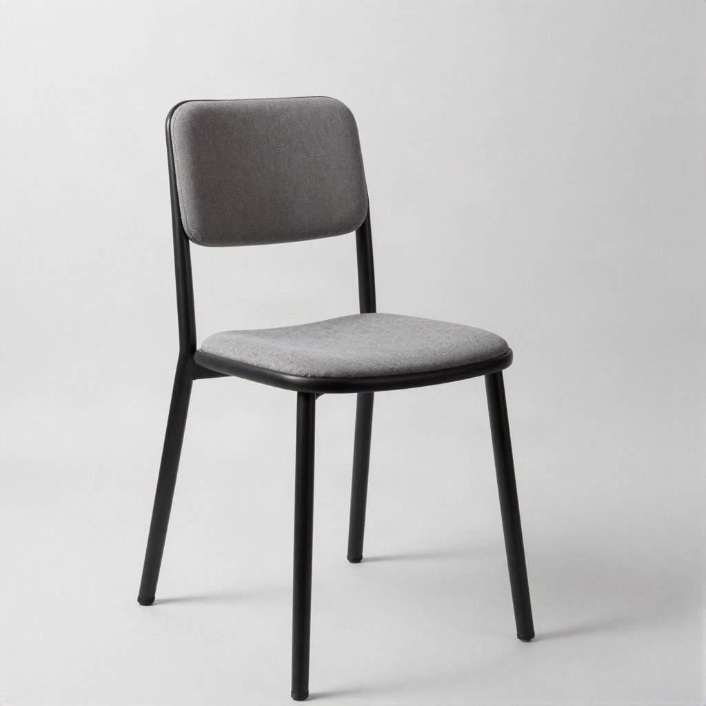
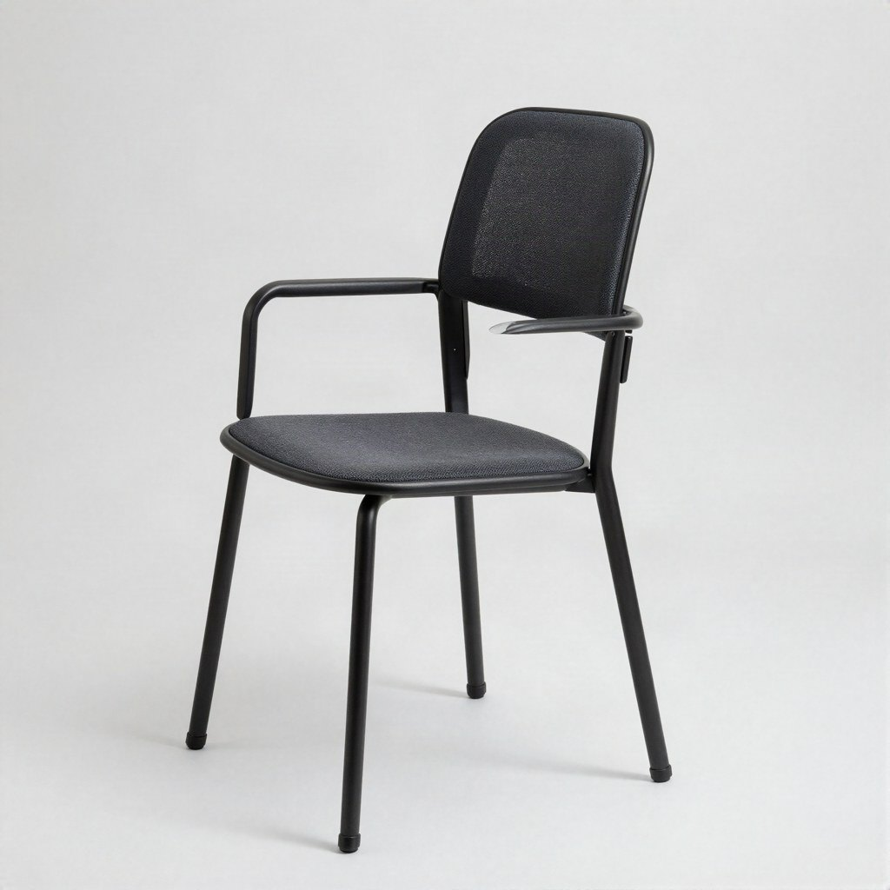
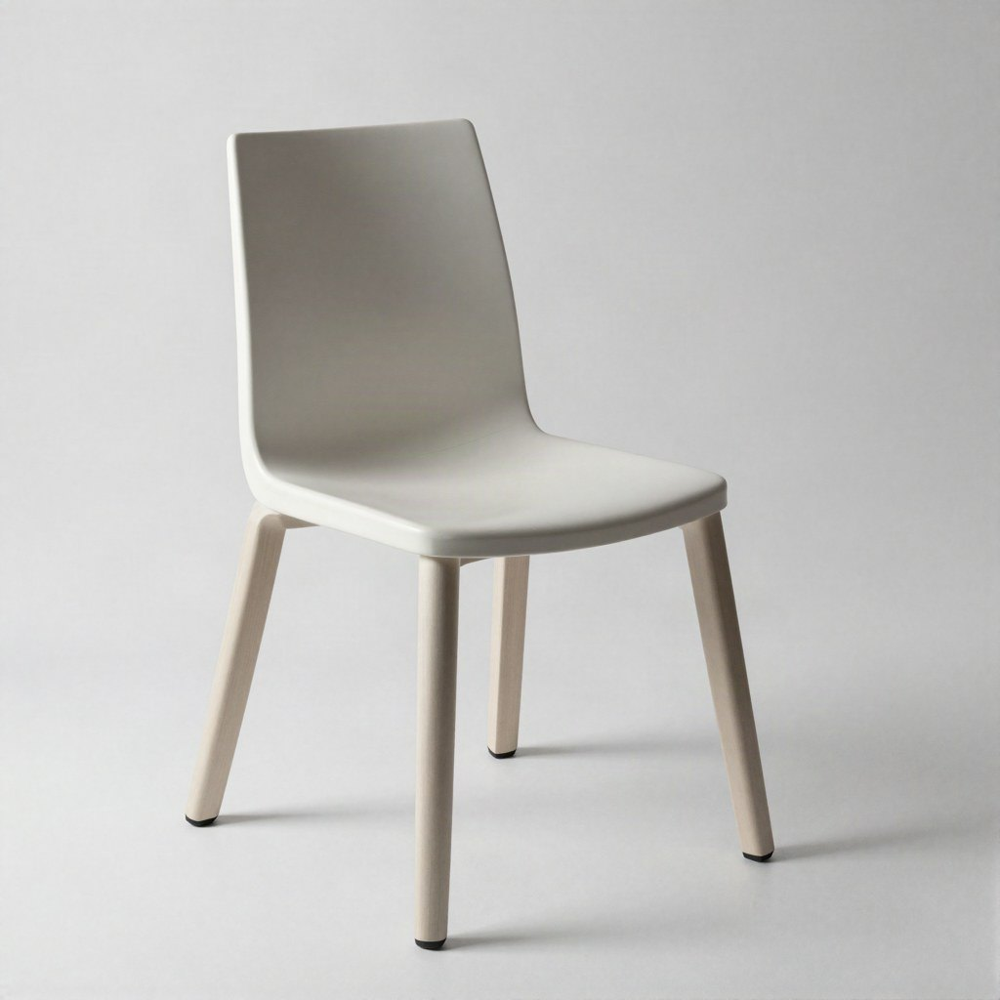
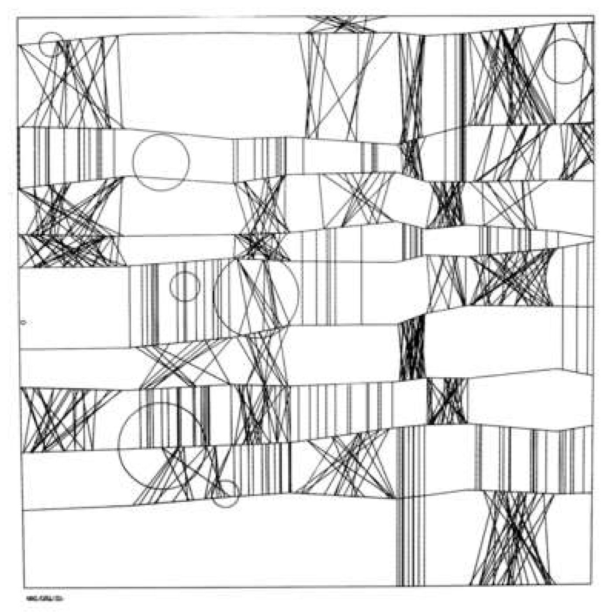

POLYU SCHOOL OF DESIGN · SD2112 · WEEK 01 · LECTURE
Artificial intelligence in design.
Week 1 — the journey, and two ways to teach a machine.
a·t4x
SD2112 · WEEK 01
Today
01
Why are we here?
02
Who are we?
03
The journey
04
What is AI?
05
AI in design, now
06
The designer's turn
07
Activity: teach the machine
08
How this course works
SD2112 · AI IN DESIGN · WEEK 01
02

01 · QUESTION · WORD CLOUD
AI in design. One word.
The first word that comes to mind. No right answer — we read the biggest words aloud.
SD2112 · AI IN DESIGN · WEEK 01
03
01
Why are we here?
AI is in the tools, in the products, and in the job
SD2112 · AI IN DESIGN · WEEK 01
04
01 · WHY ARE WE HERE
Three things changed
THE TOOLS
Your tools have models inside them.
Generative fill in Photoshop. Layouts in Figma. A brief written with a chatbot at 2 a.m. You already work with AI, whether you chose to or not.
THE PRODUCTS
Your products have models inside them.
Feeds, filters, recommendations, assistants. The thing you design increasingly decides, on its own, what each person sees. Someone has to design that.
THE JOB
Your job is moving.
From making every artefact by hand to choosing, briefing, curating and setting the rules. What a designer is for is being renegotiated this decade. Better to be in the room.
SD2112 · AI IN DESIGN · WEEK 01
05
02
Who are we?
Your team · and you
SD2112 · AI IN DESIGN · WEEK 01
06
02 · WHO IS TEACHING YOU
I study how machines form concepts.
Giovanni Lion. PhD in computational creativity: how a machine ends up with an idea of "chair", and what that does to makers.
Two years operating Sophia at Hanson Robotics. It rebooted minutes before a show. It came back.
Musical Fruitstand: fruit you can play. A-Eye: the audience repainted live at M+. Featherman: a game with WWF Mai Po.
One photo of me, three models, three styles.

Top: one photo of me through three image models. Bottom right: "Ada Lovelace at her machine", a diffusion model, 2025.
SD2112 · AI IN DESIGN · WEEK 01
07
02 · YOUR TEAM THIS SEMESTER
Four people. Use them.
GL
Giovanni Lion
Lecturer
Lectures, briefs, grading. Questions in class first, then email.
giovannilion.link
N
Nicolò
Teaching assistant
In the room 30 minutes before and 30 minutes after every class.
Tools, accounts, code, the weekly challenges. Also built the course video playlist.
A
Amber
Teaching assistant
In the room 30 minutes before and 30 minutes after every class.
Assignments, group project, feedback on your work in progress.
ZZ
ZHOU Zhibin
Class coordinator
Attendance and absences, admin, anything about the class as a whole.
Cannot come? Tell Zhibin before class. That is what keeps your participation mark.
SD2112 · AI IN DESIGN · WEEK 01
08
02 · WHO ARE YOU · MULTIPLE CHOICE
Which studio are you closest to?
A
Communication or advertising design
B
Product or industrial design
C
Interaction, digital or media design
D
Environment, interior, social — or something else
SD2112 · AI IN DESIGN · WEEK 01
09
02 · WHO ARE YOU · MULTIPLE CHOICE
How much have you used AI in your design work?
A
Never, or once to try it
B
Sometimes — for ideas, images, or text
C
Every week; it is part of my workflow
D
I have built something with a model or an API
SD2112 · AI IN DESIGN · WEEK 01
10
02 · WHO ARE YOU · MULTIPLE CHOICE
Have you written code?
A
No
B
A little — p5.js, Python, HTML or CSS
C
Comfortably
SD2112 · AI IN DESIGN · WEEK 01
11
03
The journey
13 weeks · four modules · one question
SD2112 · AI IN DESIGN · WEEK 01
12
03 · THE SEMESTER
Where we are going
1 · What is AI?
Week 1
Two ways to teach a machine
Week 2
Rules that make things: code, chance, generative art
Week 3
Learning from examples: concepts, neurons, Move 37
2 · AI for the creative process
Week 4
Language machines: LLMs, prompts, agents
Week 5
Image machines: diffusion, CLIP, mediation
Week 6
Sound machines: music, voice, spectrograms
Mid-term
Week 7
Mid-term quiz · project pitches · teams · reflection due
3 · AI inside products
Week 8
AI as design material: use vs incorporate
Week 9
Data, bias and privacy
Week 10
Recommendation systems and the feed
4 · The designer's turn
Week 11
Curating outputs and datasets · authorship
Week 12
Language as an interface: chatbots and agents
Showcase
Week 13
Poster fair — group projects
Week 14
Final quiz
SD2112 · AI IN DESIGN · WEEK 01
13
"The Analytical Engine has no pretensions whatever to originate anything. It can do whatever we know how to order it to perform."
Ada Lovelace, Note G, 1843 — the first published program, for a machine that was never built
SD2112 · AI IN DESIGN · WEEK 01
14
03 · THE QUESTION
Can a machine originate a design? By week 13 you will have an answer you can defend.
SD2112 · AI IN DESIGN · WEEK 01
15
04
What is AI?
A definition · two machines · one chair
SD2112 · AI IN DESIGN · WEEK 01
16
04 · QUESTION · SHORT ANSWER
What is AI? One sentence, your own words.
Do not look it up. Write what you actually think it is.
SD2112 · AI IN DESIGN · WEEK 01
17
04 · A WORKING DEFINITION · GIO, 2025
Intelligent-like output or behaviour, achieved through computation.
SD2112 · AI IN DESIGN · WEEK 01
18
04 · INTELLIGENT, OR CREATIVE?
Intelligent is not the same as creative.
Wiggins, 2006: computational creativity is "the performance of tasks which, if performed by a human, would be deemed creative."
The trick: it judges the output, not the process.
Intelligent: solves the problem you set.
Creative: makes something you did not order, and you still want it.
Lovelace said the second is impossible. Hold that until Move 37.
Alan Turing. 1936: every computer is a Turing machine. 1950: "Can machines think?" becomes the imitation game.
SD2112 · AI IN DESIGN · WEEK 01
19

1837 · CHARLES BABBAGE · THE ANALYTICAL ENGINE
A computer is a physical thing: brass and steel, cut by hand. This one was designed and never finished. Lovelace programmed it anyway.
04 · TWO MACHINES
Two ways to teach a machine what a chair is.
SD2112 · AI IN DESIGN · WEEK 01
21
04 · TWO MACHINES
Write the rule, or show the examples.
Machine A: symbolic AI, 1956 onwards — definitions, logic, expert systems. Machine B: machine learning, 1958 / 1986 / 2012 — statistics over examples.
SD2112 · AI IN DESIGN · WEEK 01
22
04 · MACHINE A · RULES
One rule. Twelve chairs.
Every chair here comes from the same six numbers: seat height, seat width, back height, back angle, number of legs, splay.
Change a number, get a chair. It can make a million and every one is a chair by definition.
It can never make a beanbag. The definition does not know beanbags exist.
This is parametric design — Grasshopper, variable fonts, CSS grid. Week 2 is this: rules that make things.
chair(seat=0.45, width=0.62, back=0.6, angle=8, legs=4, splay=0.05) — the same function, twelve times
SD2112 · AI IN DESIGN · WEEK 01
23
04 · MACHINE B · EXAMPLES
Ask a model for "a chair". Four times.
No rule anywhere. A diffusion model saw millions of pictures with the word "chair" nearby and learned a feel for it.
Four requests, four chairs, and they are all the same chair: four legs, a back, wood, a bit of mid-century.
It cannot tell you why. It can tell you what is typical.
Weeks 3 and 5 are this: learning from examples, and what the examples do to the result.




Prompt: "a chair, studio product photograph, plain white background" — one fast text-to-image model, four seeds, September 2026.
SD2112 · AI IN DESIGN · WEEK 01
24
04 · ONE MINUTE · DRAW
15 sec
Draw a chair. Fifteen seconds. Hold it up.
Pen, paper, no thinking. When the time is up, hold the drawing above your head and look around the room.
SD2112 · AI IN DESIGN · WEEK 01
25
04 · ROSCH, 1975 · TYPICALITY
Concepts have a middle and an edge.
Typical members are named first, learned first, recognised faster. The edge is where the definition breaks: is a bean bag a chair? a swing? the rock you sat on at lunch?
Rosch & Mervis 1975 — family resemblance, not necessary and sufficient conditions. Machine A lives on the definition. Machine B lives in the middle. Designers work at the edge.
SD2112 · AI IN DESIGN · WEEK 01
26
04 · MACHINE B · AT THE EDGE
Ask for the edge. Get the middle.
I asked the same model for "an object that is barely still a chair, an unusual seat that stretches the definition".
It gave me this. A chair. Slightly more designed. Four legs and a back.
A model trained on examples pulls towards the typical. The edge is where its examples run out.
The designer's job starts exactly where the model's confidence ends.

Prompt: "an object that is barely still a chair, an unusual seat that stretches the definition of chair, studio product photograph". Same model, one seed.
SD2112 · AI IN DESIGN · WEEK 01
27
04 · QUICK CHECK · MULTIPLE CHOICE
Which of these is a chair?
A
A bean bag
B
A tree stump you sit on
C
Both
D
Neither
SD2112 · AI IN DESIGN · WEEK 01
28
04 · SAME APP, TWO MACHINES
You already use both, every day.
PHOTOSHOP · 1990s
Auto Levels
A rule: stretch the histogram until the darkest pixel is black and the lightest is white. Same input, same output, forever. Machine A.
PHOTOSHOP · 2010
Content-Aware Fill
An algorithm (PatchMatch) that searches the image for patches that fit the hole. Clever rules, no training. Still machine A.
PHOTOSHOP · 2023
Generative Fill
A diffusion model trained on Adobe Stock invents what belongs in the hole. Fluent, surprising, sometimes wrong. Machine B.
SD2112 · AI IN DESIGN · WEEK 01
29
04 · HOW WE GOT HERE
Two lines, one hundred and eighty years.
1843
Lovelace, Note G
The first program — and the first objection: it cannot originate.
1950
Turing asks
"Can machines think?" becomes: can you tell the difference?
1965
Nake & Nees
A plotter draws from a program, in a gallery. Rules make art.
1986
Backprop
Rumelhart, Hinton, Williams: networks learn from examples.
2012
AlexNet
Deep learning wins at seeing. GPUs and the web made it possible.
2016
Move 37
AlphaGo plays a move no human would. Creative, or alien?
2022
ChatGPT · Stable Diffusion
Machine B reaches everyone, through a text box.
2026
You
Both machines in every tool. The designer decides which, and when.
SD2112 · AI IN DESIGN · WEEK 01
30

1965 · FRIEDER NAKE · HOMAGE TO PAUL KLEE
A program drew this. Screenprint after a plotter drawing, 49 x 49 cm. It hangs in the V&A. Bense called it information aesthetics: beauty from rules, on purpose.
04 · MACHINE B · HOW IT LEARNS
A guess, a correction, a million times.
Rosenblatt's perceptron, 1958: connections that adjust when the guess is wrong. Ignored for thirty years.
1986: backpropagation makes deep networks trainable (Rumelhart, Hinton, Williams). Hinton: Nobel Prize in Physics, 2024.
2012: AlexNet, trained on a million labelled photos, wins at seeing. The web gave the examples, gaming gave the chips.
2017: transformers, the architecture inside every chatbot. Week 4.
SD2112 · AI IN DESIGN · WEEK 01
32
2016 · ALPHAGO · WATCH BEFORE WEEK 3
Move 37.
Game two against Lee Sedol. AlphaGo plays a move the commentators call a mistake. It was not.
Trained on human games, then on millions of games against itself. Nobody ordered move 37.
Lovelace's objection meets a counter-example. Or an alien way of thinking that only looks creative.
Watch the documentary before week 3. It is on the course playlist.
SD2112 · AI IN DESIGN · WEEK 01
33
2018 · OBVIOUS · EDMOND DE BELAMY
Sold at Christie's for US$432,500. Signed, bottom right, with the loss function of the network that made it. Who is the author? Week 11.
05
AI in design, now
Using it · incorporating it · three cases
SD2112 · AI IN DESIGN · WEEK 01
35
05 · THE DISTINCTION THAT ORGANISES THE COURSE
Using AI, or incorporating AI.
WEEKS 1 – 6 · THE PROCESS
Using AI
AI as a tool in how you design: a brief drafted with a chatbot, a moodboard from a diffusion model, generative fill, layouts from Figma Make.
You stay the author. You become the curator, the briefer, the editor.
WEEKS 8 – 12 · THE PRODUCT
Incorporating AI
AI as a material in what you design: a feed, a recommendation, an assistant, a filter — the product decides something for each person, on its own.
You design a behaviour, not a picture. Data, bias, trust and accountability become design problems.
SD2112 · AI IN DESIGN · WEEK 01
36
05 · THREE CASES
What it looks like when it ships.
USING · 2024
Coca-Cola remakes its holiday ad with generative video
The trucks, the snow, the faces: made with generative video tools and finished by hand. Viewers noticed — the reception split. What did the audience see that the model did not? Craft is now a question of what you let through.
INCORPORATING · SINCE 2017
Netflix chooses a different poster for each viewer
The same film, several pieces of artwork; a model picks the one you are most likely to click. The poster designer no longer makes one image — they design a space of images and the rules for choosing.
AI AS THE PRODUCT · 2024–25
The Humane AI Pin
A wearable whose entire interface was an assistant. Beautiful hardware, launched at US$699, discontinued within a year. A model is not a product. The interaction, the trust and the failure states still have to be designed.
SD2112 · AI IN DESIGN · WEEK 01
37
05 · QUESTION · SHORT ANSWER
Where did AI touch your design work this week?
One example: a tool you used, a feed that chose for you, a product that answered back. A link if you have one.
SD2112 · AI IN DESIGN · WEEK 01
38
05 · THE COURSE PLAYLIST · BY NICOLÒ
Fifteen videos, in the order we need them.
youtube.com/playlist?list=PLU58DFEI5YDQ
Before week 3: AlphaGo. Illiac Suite (1957), Cage's Water Walk (1960), Tinguely's Homage to New York (1960), Kaprow's Fluids (1967).
Week 4: large language models, explained briefly (3Blue1Brown).
Week 5: diffusion, how AI images work, CLIP, autoencoders, UNet, text-to-video, ComfyUI.
Week 6: AI sound and music. Week 12: generative vs rules-based chatbots.
John Cage, Water Walk, 1960: a score of timed instructions, performed on live television. Rules, chance and a bathtub.
SD2112 · AI IN DESIGN · WEEK 01
39
06
The designer's turn
Technology is never neutral · neither is design
SD2112 · AI IN DESIGN · WEEK 01
40
"Designing things is designing human existence."
Peter-Paul Verbeek, Beyond Interaction: A Short Introduction to Mediation Theory, Interactions, 2015 — the reading for week 5
SD2112 · AI IN DESIGN · WEEK 01
41
06 · IHDE · VERBEEK · TECHNOLOGICAL MEDIATION
The thing in between is never neutral.
You do not see the world and then use a tool. You see the world through the tool: glasses, a camera, a feed, a fill. Week 5 gives you Ihde's four relations and a vocabulary for designing them.
Ihde 1990, Verbeek 2015. Embodiment (through), hermeneutic (reading), alterity (facing), background — and the AI versions of each.
SD2112 · AI IN DESIGN · WEEK 01
42
06 · WHAT IS LEFT FOR YOU
Designers as…
OUTPUTS
Curators of what ships
A model makes a hundred. You choose one, and you answer for it. Not everything generated should be released.
DATASETS
Curators of what it learns
Choose the examples and you choose the prototype. Fine-tune on your own work and the model learns your edge, not the internet's middle. Week 11.
RULES
Setters of guardrails
Decide what the machine may not do, when a human must be in the loop, how it fails in front of a person. Machine A protecting people from machine B.
STORY
Tellers of the process
Clients, users and juries will ask how it was made. Documenting the human decisions is now part of the design. Your reflection starts this.
SD2112 · AI IN DESIGN · WEEK 01
43
07
Teach the machine what a chair is
8 minutes · pen and paper · no software
SD2112 · AI IN DESIGN · WEEK 01
44
ACTIVITY · 1 — ALONE
1 min
Write the rule.
Define "chair" so that a machine could apply it, with no judgement of its own. One sentence: X is a chair if ___.
Be strict. A rule that admits everything is useless. Pen and paper, silent.
SD2112 · AI IN DESIGN · WEEK 01
45
ACTIVITY · 2 — IN PAIRS
2 min
Break the rule.
Swap sentences with your neighbour. Find one thing that passes their rule and is not a chair, and one chair that fails it.
Write both down under the rule. Whoever's rule survives longest wins nothing; the point is that neither survives.
SD2112 · AI IN DESIGN · WEEK 01
46
ACTIVITY · 4 — TWO PAIRS
4 min
Now teach it with examples instead.
Join the pair behind you. Four people, one machine. Pick the five photographs you would show it to teach "chair". Then one hard no: something that looks like a chair and is not.
Decide together: what does the machine learn if all five are office chairs? Whose chairs are missing? One person writes.
SD2112 · AI IN DESIGN · WEEK 01
47
07 · CAPTURE · 2 MIN · SHORT ANSWER
Scribes only. One line per four.
RULE broke on: ___ · FIVE EXAMPLES: ___ · HARD NO: ___
e.g. "broke on: a swing · examples: Thonet 14, monobloc, a throne, a wheelchair, a kindergarten chair · hard no: a stepladder"
SD2112 · AI IN DESIGN · WEEK 01
48
07 · WHAT JUST HAPPENED
You built both machines.
Eight minutes, no software. The rule-writers hit every problem of the classical theory of concepts — Plato's problem, fuzziness, the counter-example. Week 3.
The example-pickers hit dataset bias and curation: five chairs decide what "chair" means. Weeks 9 and 11.
A machine can apply the rule. A machine can learn from the examples.
It cannot decide which examples. That was you.
SD2112 · AI IN DESIGN · WEEK 01
49
08
How this course works
Assessment · assignments · weekly challenges · rules
SD2112 · AI IN DESIGN · WEEK 01
50
08 · ASSESSMENT
Five components.
10%
Participation
Come to class, or tell Zhibin before you cannot. Answer in ClassPoint. Stars count.
20%
Individual reflection
Weeks 1–6: experiment with AI in your own process. ~1000 words, due week 7.
10%
Mid-term quiz
Multiple choice, week 7. Concepts from weeks 1–6 and the playlist.
40%
Group project
Design a product that incorporates AI. Poster A0 + 3–5 min video + one-page mediation brief. Poster fair, week 13.
20%
Final quiz
Multiple choice, week 14. The whole course.
SD2112 · AI IN DESIGN · WEEK 01
51
08 · INDIVIDUAL REFLECTION · 20% · DUE WEEK 7
Use AI in your own process for six weeks. Then argue.
Topic: the role of AI in your creative process — with particular attention to the difference between rule-based and adaptive systems.
About 1000 words, submitted on Blackboard.
Evidence: at least three of your own experiments from the weekly challenges, with images.
A short process note at the end: how you used AI to make the reflection itself. Allowed, expected, disclosed.
Graded on understanding (30), argument (30), evidence (20), clarity (10), originality (10). Rubric on Blackboard.
SD2112 · AI IN DESIGN · WEEK 01
52
08 · GROUP PROJECT · 40% · DUE WEEK 13
Design a product that incorporates AI.
Teams of four to five, formed in week 7. A product or service in which a model decides something for each person — and your account of what that does to them.
Poster, A0: the research and the design concept, shown at the poster fair.
Video, 3–5 min: how the product works, for someone who has never seen it.
Mediation brief, one page: which human–technology relation you are building, what data it needs, where it is biased, and the guardrails.
Rubric: research and context (30), ethical and social impact (30), poster (20), video (10), teamwork and process (10).
SD2112 · AI IN DESIGN · WEEK 01
53
08 · WEEKLY CHALLENGES · WEEKS 2 – 6
Make one thing a week.
WEEK 2
A picture from rules
A p5.js sketch. One rule, one random number, your own picture.
WEEK 3
A dataset of ten
Ten images that teach a machine one concept from your studio. Say what it would learn wrong.
WEEK 4
A brief, automated
A design brief drafted by a language model from your prompt, then edited by you. Show both.
WEEK 5
An image you could not draw
Generated, iterated, and critiqued: what did the model decide that you did not?
WEEK 6
Thirty seconds of sound
A sound or music snippet for a product. Where did control stay with you?
SD2112 · AI IN DESIGN · WEEK 01
54
08 · THE RULES
Three rules.
ATTENDANCE
Come, or say so before.
Participation is attendance plus ClassPoint. If you cannot come, tell ZHOU Zhibin before the class starts. Silent absence costs the mark; a message does not.
AI USE
Allowed. Disclosed. Yours.
Use any model, in any assignment. Say which, and how, in a process note. You are the author: you answer for accuracy, for sources, and for taste. Invented citations fail the assignment.
ROOM
30 minutes before, 30 after.
Nicolò and Amber are in the room before and after every class. Laptops, accounts, tools, drafts. That hour is the tutorial.
SD2112 · AI IN DESIGN · WEEK 01
55
08 · BEFORE NEXT WEEK
Four things to set up, one thing to watch.
ClassPoint: you are in. Same name every week — the last four digits and the letter of your student ID, e.g. 8695D.
Blackboard: the course page, submissions, the rubric, these slides.
p5.js web editor: a free account at editor.p5js.org. Week 2 is rules that draw.
One image tool you can log into: Firefly, Bing Image Creator, or another. Week 5 needs it; week 3 helps to have it.
Watch: AlphaGo (90 min) and the four short art films on the playlist. Bring a laptop next week.
SD2112 · AI IN DESIGN · WEEK 01
56
08 · QUESTION · WORD CLOUD
What's your X? One word.
What do you want to make with AI this semester? A poster, a chair, a game, a brand, a film, a service — one word.
SD2112 · AI IN DESIGN · WEEK 01
57
08 · QUESTION · SHORT ANSWER · ANONYMOUS
One hope and one worry.
About AI in your own design work. Names are hidden. Two short lines.
SD2112 · AI IN DESIGN · WEEK 01
58
See you next week. Rules that make things.
Bring a laptop. Watch AlphaGo. Draw another chair.
venetanji.github.io/sd2112-teaching · www.youtube.com/playlist?list=PLU58DFEI5YDQ
a·t4x